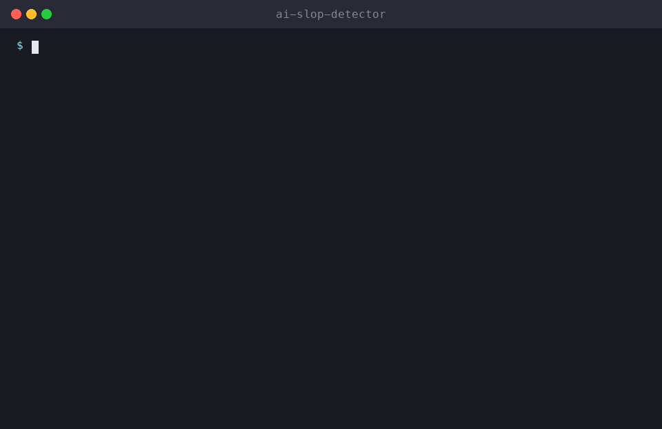

🧹 ai-slop-detector
Score text for AI-sounding writing and rewrite it to sound human, keeping the author's voice. A free, open-source Agent Skill for Claude Code, Cline, Cursor, Codex and 75+ AI agents.

Install ai-slop-detector
# Claude Code (all 51 skills)
/plugin install all-skills --marketplace milad-ahmd/agent-skills
# Cursor, Codex, Cline, Windsurf, Copilot + 75 more agents
npx skills add milad-ahmd/agent-skills --skill ai-slop-detector
# Shell installer
curl -fsSL https://raw.githubusercontent.com/milad-ahmd/agent-skills/main/install.sh | bash -s -- ai-slop-detectorIncluded in packs: creator-pack, fun-pack
What to say to your agent
De-slop this blog postDoes this sound like AI? Make it sound human
When it triggers
Finds "AI slop" writing patterns, such as cliché phrases ("delve", "in today's fast-paced world"), em-dash overload, uniform sentence rhythm, reflexive triads, and empty conclusions, using a scoring script, then rewrites the text to sound specific and human while keeping the author's meaning and voice. Use when the user asks to humanize text, remove AI-sounding phrasing, de-slop a draft, or check whether writing sounds robotic.
Full skill instructions (SKILL.md)
AI Slop Detector
Make writing sound like a specific human wrote it, not an average of the internet.
1. Scan
python3 scripts/slop_scan.py draft.md # file
pbpaste | python3 scripts/slop_scan.py - # stdinThe script prints a slop-signal score from 0 to 100, the flagged lines with line numbers, em-dash density and sentence-rhythm uniformity.
2. Diagnose the patterns the script can't catch
- Generic claims with no specifics (no names, numbers, examples).
- Reflexive "X, Y, and Z" triads, and "It's not just A, it's B" constructions.
- Empty openers and closers ("In conclusion", "Ultimately", "I hope this helps!").
- Hedging stacks ("may potentially help to"), and bullet lists where prose would read better.
- The same paragraph shape repeated over and over.
3. Rewrite
- Keep the meaning, the facts and the author's voice. Ask for a sample of their own writing if you can.
- Replace abstractions with concrete details the author supplies. Never invent anecdotes or data. Mark the gaps as
[add a real example]. - Vary sentence length, use plain verbs, and cut filler and most em-dashes.
- Show the top 5 changes as before → after, then the full rewrite. Re-run the scanner to confirm the score dropped.
Rules
- This measures style signals, not authorship. Never claim it proves text was written by AI, and don't use it to accuse students, employees or writers.
- Don't strip technical terms that are correct in context ("robust" in statistics, "leverage" in finance).